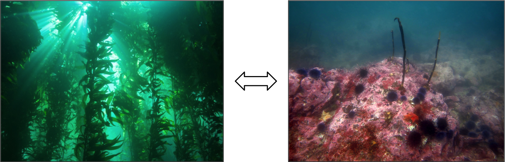
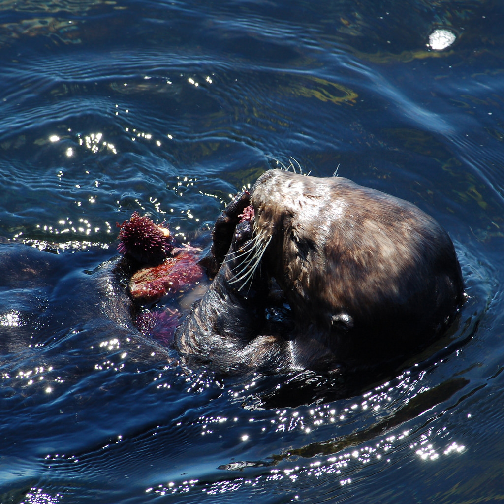

A purple sea urchin at Hopkins Marine Station munches on some kelp. Video at 8x normal speed by N. Low.
A purple sea urchin at Hopkins Marine Station munches on some kelp. Video at 8x normal speed by N. Low.Image by Ray Ellersick (CC BY-NC-ND 2.0)
If I were to ask you to name your favorite animal, chances are that it would not be a sea urchin. And I wouldn’t blame you - sea urchins are certainly not very charismatic, as far as animals go. At first glance, they come across as no more than a bunch of rocks with too many spikes and not enough personality. But there is much more to these weird, spiny critters than meets the eye.
In fact, sea urchins have been at the center of many scientific insights that shaped the way we understand the natural world. They have taught us many different things - from the workings of entire ecosystems, to the workings of tiny cells. In this series, I will highlight some of the ways that these animals have helped us better understand ourselves and our world.
Underwater lawnmowers
Sea urchins don’t have eyes, ears, or noses, but they do have mouths. The sea urchin mouth is found on the underside of its body and consists of five little pointed ‘teeth’ (charmingly called an “Aristotle’s lantern”). These hungry little mouths mainly eat seaweed growing on the rocky bottom of the sea.
They can eat so much seaweed that they completely transform entire marine ecosystems. Imagine an army of lawnmowers that mows down everything in its path – trees, bushes, and grass. A large group of hungry, roaming sea urchins can have similar impacts on some marine ecosystems. In particular, sea urchins have been responsible for the deforestation of kelp forest ecosystems in many parts of the world.
Ecosystem tipping points
Many kelp forests exist in a balance between how fast the kelp grows and how fast it gets eaten by sea urchins. When the kelp grows faster than sea urchins eat it, kelp forests can grow and expand. When sea urchins increase in number, the balance tips toward the other direction. If there are too many sea urchins, they can eat away all of the kelp and turn the lush, productive kelp forest into a ‘barren’ of sea urchins. This has widespread consequences: the kelp forest is home to many other animals, including many of the fish and shellfish that people like to eat. If the kelp forest disappears, so do all these other animals (and our seafood dinners!).
 High levels of sea urchin grazing can ‘tip’ a kelp forest ecosystem into an urchin barren. Photos by NOAA's National Marine Sanctuaries and N. Low.
This drastic change in ecosystem state has been observed in many different types of kelp forests all over the world. Because it is so dramatic and widespread, many scientists use this kelp forest-urchin barren system as a model to study ‘tipping points’ in ecosystems. For example, how many sea urchins can a kelp forest have before it ‘tips over’ to become an urchin barren? And if the number of sea urchins goes down, does the urchin barren turn back into a lush kelp forest? By understanding how these tipping points work, we can learn how to better manage ecosystems and keep them from ‘tipping’ into a less productive, less desirable state.
One thing that scientists have discovered is that tipping points are different, depending on which direction the ecosystem is tipping. For example, it takes fewer sea urchins to maintain an urchin barren than it does to create one. So to turn an urchin barren back into a kelp forest, we would need to reduce sea urchin populations to a much lower number than if we just wanted to stop a kelp forest from becoming an urchin barren.
In other words, it is easier to prevent an ecosystem from ‘tipping over’ into a less productive state than it is to restore an ecosystem that has already crossed that threshold. When it comes to managing ecosystems, prevention is better than cure. These concepts don’t just apply to kelp forests: they are helping us protect and manage a diverse range of ecosystems including coral reefs, estuaries, and grasslands.
Why we need predators
So how do you reduce a population of underwater lawnmowers? Well, you find something that eats them. Sea otters are really, really good at eating sea urchins. When there are sea otters around, there are fewer sea urchins, and those sea urchins also spend more time hiding instead of eating kelp. Therefore, the sea otters have an indirect, beneficial effect on the kelp, and they tip the ecosystem toward the ‘kelp forest’ state.
 Sea otters can control sea urchin populations by eating them, and thus have positive effects on kelp forests. Photo by Matt Knoth (CC BY-NC-ND 2.0).
Because the effects of the sea otters ‘cascade’ down the food chain, scientists call this relationship between sea otters, sea urchins, and kelp a ‘trophic cascade’. This is actually one of the best known examples of a trophic cascade – crack open a textbook with a section on community ecology, and there’s a good chance you’ll see an otter, an urchin, and kelp.
The concept of trophic cascades has helped us understand the importance of top predators in ecosystems, and the consequences of losing them. Whether those predators are sea otters in kelp forests, sharks on coral reefs, or wolves in Yellowstone Park, their loss ‘cascades’ down the food web and can alter the entire ecosystem in many far-reaching ways.
Similar to the idea of ‘tipping points’, the concept of trophic cascades has given us a better understanding of how ecosystems work. In this case, it has helped us recognize the importance of better conserving top predators, or restoring them to places where they have been lost.
An urchin’s worth
Sea urchins may not be the best-looking inhabitants of our oceans, but they are important players in their underwater ecosystems, and have taught us a lot about how these ecosystems work. Today, many scientists (like myself) study the effects of climate change on sea urchin ecology as a way to better understand how climate change may affect the workings of ecosystems. As we face new global challenges, sea urchins will continue to play important roles in learning how to understand and protect our ecosystems.
The urchin’s tale is not just a story of ecosystems. Incredibly, these spiky animals have taught us just as much about cellular and developmental biology as they have about ecology. In my next article, we will go from large ecosystems to tiny cells, and explore what sea urchins have taught us about the very beginnings of new life.